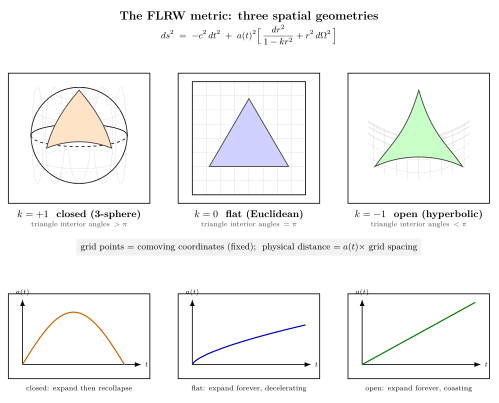

宇宙真的是均匀各向同性的吗?
到这一节为止, 我们对引力的应用都集中在两类对象上: 太阳系尺度的弱场修正 (Mercury 进动, 光线偏折, GPS), 以及恒星 / 双星 / 黑洞这种致密物体周围的 Schwarzschild 与 Kerr 时空. 这些是"局部"问题——我们关心一颗恒星周围的几何, 不去问全宇宙怎样.
但 GR 一旦写出来, 它就允许我们问一个比任何局部问题都大胆的问题: 整个宇宙是什么形状的? 时空是无限的还是闭合的? 它在膨胀还是静态? 它在加速还是减速? 这些问题在 1915 年之前根本无法精确提出——你需要一组方程能描述整个时空, 而不是某一恒星附近的修正. 现在我们手上有 $G_{\mu\nu}+\Lambda g_{\mu\nu}=8\pi G T_{\mu\nu}/c^{4}$, 我们有资格直接代入"整个宇宙作为一个流体"作为源, 看时空对它怎么响应. 但要这么做, 我们得先回答一个前置问题: 什么样的度规 ansatz 适合"整个宇宙"? 这就是这一节的主题.
一、一个观测事实: 大尺度上, 宇宙是均匀的
"宇宙是均匀的"听起来荒唐——你抬头看, 头顶有月亮, 远处有银河, 房间里有地板, 这哪里均匀? 关键在于尺度. 太阳系尺度 ($\sim 10^{13}\,\mathrm{m}$, 一个光时), 物质几乎全在太阳上, 极不均匀; 银河系尺度 ($\sim 10^{21}\,\mathrm{m}$, 十万光年), 银盘+晕的结构清楚可见; 星系团尺度 ($\sim 10^{23}\,\mathrm{m}$, 上千万光年), 我们看到的是 Virgo, Coma 这样的成团结构. 一直到 $\gtrsim 100\,\mathrm{Mpc}\approx 3\times 10^{24}\,\mathrm{m}$ 这个量级——也就是几亿光年——把视野再拉大, 把这种粒度作为"一个像素", 然后比较不同位置的像素, 你才发现: 它们的星系数密度、星团数密度、平均亮度全都相同. 大尺度结构巡天 (SDSS, BOSS, eBOSS) 给出的双点关联函数在 $r\gtrsim 100\,\mathrm{Mpc}$ 处迅速衰减到接近零, 只剩 BAO 那道淡淡的特征峰——这正是均匀性的定量陈述.
"宇宙是各向同性的"的最强证据是宇宙微波背景 (CMB). 1964 年 Penzias-Wilson 在 Holmdel 偶然探到的那个 2.7 K 微波信号, 后来被 COBE (1989), WMAP (2001), Planck (2009) 一代一代用更精细的卫星测量, 给出的结论统一: 全天每一个方向看 CMB, 温度都是 $T_{\rm CMB}=2.7255\,\mathrm{K}$, 涨落只有
$$ \frac{\Delta T}{T} \;\sim\; 10^{-5}. $$
这意味着, 宇宙在最早 $38$ 万年时, 在所有方向上几乎完全等温, 误差仅十万分之一. 任何"各向异性的宇宙模型"都必须解释为什么在那一刻看到的辐射这么平. (减去地球本身相对 CMB 静止系的运动给出的 $10^{-3}$ 量级偶极子, 真正的内禀涨落就是 $10^{-5}$.)
把这两条事实——大尺度均匀 + 全天各向同性——合在一起, 加上一个"在哥白尼意义上没有特殊位置"的逻辑步骤, 你就得到
宇宙学原理: 存在一族"共动观察者"——他们随宇宙整体一起运动——他们的瞬时三维空间在大尺度上是均匀且各向同性的.
"共动"二字关键: 我们并不是在说"宇宙在任意坐标系里都各向同性"——选一个相对 CMB 高速运动的观察者, 他立刻看到强烈的 Doppler 偶极子. 我们说的是: 存在一种特定的切片方式 (一族特殊的时间面), 在这种切片上每一个 $t=$ 常数的三维空间是均匀各向同性的. 这族观察者本质上就是 CMB 局部静止的观察者.
二、把"均匀 + 各向同性"翻成度规
现在做数学. 假设宇宙学原理成立, 度规会是什么形式?
设共动时间是 $t$, 三维空间用某种坐标 $\mathbf x$ 描述. 各向同性意味着空间 $\Sigma_{t}$ 上各方向等价, 没有特殊方向; 均匀性意味着 $\Sigma_{t}$ 上各点等价, 没有特殊位置. 这两条加起来是非常强的约束: $\Sigma_{t}$ 必须是常曲率三维空间. 三维常曲率空间在拓扑分类上 (除去复杂的紧致化) 只有三种: 三维球面 $S^{3}$ (常正曲率), 三维欧氏 $\mathbb R^{3}$ (零曲率), 三维双曲 $H^{3}$ (常负曲率). 把曲率半径归一化, 用 $k\in\{+1,0,-1\}$ 标记三种情况.
在合适坐标下, 三维常曲率空间的线元都可以写作
$$ d\ell^{2} \;=\; \frac{dr^{2}}{1-k r^{2}} \;+\; r^{2}\,d\Omega^{2}, \qquad d\Omega^{2}=d\theta^{2}+\sin^{2}\theta\,d\phi^{2}. $$
当 $k=+1$, $r$ 取值受限 $r\in[0,1]$, 对应三维球面上的"赤距余弦"; 当 $k=0$, $1-kr^{2}=1$, 退回平面极坐标 $dr^{2}+r^{2}d\Omega^{2}$; 当 $k=-1$, $r$ 可任意大, 给的是双曲三维空间.
下一步: 共动时间 $t$. 因为各向同性已经把 $g_{ti}$ 项 (空间-时间混合分量) 全部限死为零 (否则会单独给出某方向特殊待遇), 所以度规对角化, 形式是 $g_{tt}\,dt^{2}+g_{ij}\,dx^{i}dx^{j}$. 又因为均匀+各向同性, 空间分量 $g_{ij}$ 在每个 $t$ 上只能差一个公共因子——这个因子只能是 $t$ 的函数, 称为标度因子 $a(t)$. 至于 $g_{tt}$, 我们可以重定义 $t$ 让它等于 $-c^{2}$ (这就是"宇宙学时", 即共动观察者的固有时). 综合起来, 唯一允许的度规是
$$ \boxed{\;ds^{2} \;=\; -c^{2}\,dt^{2} \;+\; a(t)^{2}\,\Big[\,\frac{dr^{2}}{1-k r^{2}}+r^{2}\,d\Omega^{2}\,\Big]\,}\;. \tag{1} $$
这就是FLRW 度规 (Friedmann-Lemaître-Robertson-Walker). 它有两个未知元素: 函数 $a(t)$ (动力学的, 由 Einstein 方程决定, 见下一节) 与常数 $k$ (几何的, 三选一). 注意一件惊人的事实: 仅靠"宇宙学原理"这一条假设, 数学就把宇宙的整个度规结构卡到只剩这两个自由度. 这是我们能写出"宇宙的方程"这件事在物理上的根基.
三、共动坐标 vs 物理距离: 标度因子在干什么
FLRW 度规里有一个新概念值得停下来想清楚——共动坐标. 坐标 $r$ 是给某个星系一个永久标签: 这个星系在 $r=r_{A}$, 那个星系在 $r=r_{B}$, 它们的标签从来不变. 但它们之间的物理距离会变, 因为体元里的因子 $a(t)$ 是变的. 即"共动距离" $\Delta r$ 不动, "物理距离" $a(t)\,\Delta r$ 随 $a$ 一起变.
这在直觉上像极了气球上画两个点: 你把气球吹大, 两个点的"经纬坐标"不变, 但它们之间的弧长在加大. 类比稍微误导的地方在于, 气球还有外面 (它嵌在三维空间里), 但 FLRW 宇宙不需要外面——三维空间本身的几何在变. 这是 GR 给出的一个干净结论: 时空是一个独立存在的几何对象, 不需要外嵌.
更形式化一点: 取两个共动观察者 A, B, 他们的共动距离是常数 $\chi=\int_{A}^{B}dr/\sqrt{1-kr^{2}}$ (沿测地线). 他们在时刻 $t$ 之间的物理 (proper) 距离是 $D(t)=a(t)\,\chi$. 求时间导数:
$$ \dot D \;=\; \dot a\,\chi \;=\; \frac{\dot a}{a}\cdot a\,\chi \;=\; H(t)\,D, \qquad H(t)\equiv\frac{\dot a}{a}. \tag{2} $$
这就是 Hubble 关系: 一个共动距离 $D$ 处的星系相对我们的退行速度等于 $v=H D$. 这里的"速度"不是星系穿越空间的速度——共动观察者在共动坐标里是静止的——而是空间本身在膨胀使得 $D$ 在变化. Hubble 1929 年用 24 个星系的红移与亮度做出第一张退行速度-距离图, 直接证实了 (2). 现代值
$$ H_{0} \;=\; \begin{cases} 67.4 \pm 0.5\,\mathrm{km/s/Mpc} & \text{(Planck 2018, CMB 推断)} \\ 73.0 \pm 1.0\,\mathrm{km/s/Mpc} & \text{(SH0ES 2022, 局部 Cepheid+SN Ia 阶梯)} \end{cases} $$
两个独立测量在 $5\sigma$ 量级上不一致, 这就是 2010 年代以来宇宙学最尖锐的悬案——Hubble 张力. 它的物理意义可能是早期宇宙物理我们漏了什么 (例如额外辐射、衰变粒子), 也可能是局部测量阶梯有未知系统误差, 也可能是 $\Lambda$CDM 模型本身在某个层面失效. 我们暂且把它记下, 留给后续节讨论.
从 (2) 还可以读出: 有一个特征距离 $c/H_{0}$. 把它代数字
$$ d_{H} \;\equiv\; \frac{c}{H_{0}} \;\approx\; \frac{3\times 10^{5}\,\mathrm{km/s}}{70\,\mathrm{km/s/Mpc}} \;\approx\; 4300\,\mathrm{Mpc} \;\approx\; 14\,\mathrm{Gly}. $$
这是"Hubble 距离", 一个数量级估计. 真正的可观测宇宙半径 (今天我们能从大爆炸以来收到的光走的最远共动距离) 大约是 $46\,\mathrm{Gly}$——比 $c/H_{0}$ 大三倍多, 因为膨胀本身在过去较慢, 光走过的共动距离要做一个对 $a(t)$ 的积分. 计算这个数字需要 Friedmann 方程, 我们留到下一节. 但一个事实已经很惊人: 宇宙的"年龄" $1/H_{0}\approx 14$ 亿年级别, 与可观测宇宙半径 $46$ 亿光年级别, 不是同一个数——后者大三倍, 正因为空间一直在膨胀, 早期发出的光抵达我们时它的共动起点已经被推得更远.

四、共动观察者、宇宙时与"今天"
FLRW 度规的物理图像可以总结成一个直观说法. 想象空间网格上每一个格点 (物理上对应一个星系, 或者一个 CMB 静止系上的虚拟观察者). 他们的共动坐标是他们的"住址", 永远不变. 他们的手表读的就是 (1) 里那个 $t$, 即共动 (宇宙) 时. 他们的瞬时三维空间几何由 $k$ 决定 (球 / 平 / 鞍). 而格点之间的物理距离正比于 $a(t)$.
"今天"对应 $a_{0}\equiv a(t_{0})=1$ 的时刻 (这是宇宙学家的标准约定). 早期宇宙 $a\ll 1$ (空间小, 物质密度高); 远未来若 $\Lambda\gt 0$ 则 $a\to\infty$. 一个常用的代换是红移:
$$ 1+z \;=\; \frac{a_{0}}{a(t_{\rm emit})} \;=\; \frac{1}{a(t_{\rm emit})}. $$
它说: 来自 $a(t_{\rm emit})$ 那个时刻的光波长被拉伸了 $a_{0}/a$ 倍. CMB 来自 $z\approx 1100$, 即 $a\approx 1/1100$, 那时空间体积只有今天的 $1100^{3}\sim 10^{9}$ 分之一. 把红移与共动距离结合, 你就把"什么时候发出的"和"现在在多远"两件事接起来了.
关于 $k$ 的实验现状值得提一句. 现代 CMB 数据 (Planck 2018) 在 $\Lambda$CDM 模型下推断空间几何参数
$$ \Omega_{k} \;\equiv\; -\frac{kc^{2}}{a_{0}^{2}H_{0}^{2}} \;=\; 0.001 \pm 0.002. $$
也就是说, 在 $0.2\%$ 的精度内, 宇宙的空间是平的 ($k=0$). 这是一个深刻的观测结论——它意味着我们头顶的三维空间几何, 在数学上属于三种可能里那个最干净的一种 (无穷大、平直). 但 $k=0$ 这件事本身在朴素 Friedmann 模型里需要极精细的早期初始条件 (flatness problem), 这就是 1980 年代 Guth 提出暴胀解决的问题——下一章我们会回到. 平坦本身不是 FLRW 度规的逻辑结论, 而是观测告诉我们的事实.
五、Friedmann, Lemaître, Robertson, Walker — 度规的四个名字
这个度规四个名字, 每一个对应一段历史片段.
Friedmann (1888-1925), Petrograd (今 St. Petersburg) 的数学家与气象学家. 1922 年他在 Zeitschrift für Physik 发表 Über die Krümmung des Raumes, 第一次直接对 FLRW 度规代入 Einstein 场方程, 写出了今天所谓的 Friedmann 方程, 给出膨胀解. 那时 Einstein 自己坚持静态宇宙 (1917 加 $\Lambda$ 项就是为了这个), 看到 Friedmann 的论文, 起初认为是错的, 写信反驳; 后来读懂后正式收回, 公开承认 Friedmann 的解学是数学上正确的. Friedmann 1925 年因伤寒早逝, 没有看到 Hubble 的观测.
Lemaître (1894-1966), Louvain 的天主教神父兼物理学家. 1927 年他在 Annales de la Société Scientifique de Bruxelles 上独立得到了 Friedmann 同样的方程, 但走得更远——他首次把 Hubble 的退行速度-距离关系作为膨胀解的预测明确写出来. 论文用法语发表, 影响有限, 直到 1931 年英译扩充版才广为人知 (但翻译时 Lemaître 自己删掉了 Hubble 公式部分, 因为 1929 年 Hubble 已经发表数据). 1931 年他进一步提出"原始原子"假说——宇宙起源于一个超致密点的爆炸——这是今天大爆炸理论的最早形式. Hawking 称他为 "父亲 of cosmology".
Robertson (1903-1961), Caltech 的数学物理学家, 与 Walker (1909-2001), Liverpool 的英国数学家. 他们各自在 1935-36 年严格证明: 在宇宙学原理 (各向同性 + 均匀) 这一假设下, 度规必取 (1) 的形式——这是数学定理而不是 ansatz. Robertson 证明用的是变换群论, Walker 则用纯几何方法. 这把 Friedmann-Lemaître 解从一个"特殊解"提升到"唯一可能的形式", 配合 Hubble 1929 年的数据, FLRW 模型成为现代宇宙学的标准框架.
Hubble 1929 那篇 A relation between distance and radial velocity among extra-galactic nebulae 用了 24 个 (按今天标准误差大得吓人) 星系数据, 在距离-速度图上画出一条斜率约 $500\,\mathrm{km/s/Mpc}$ 的直线. 这个数值今天看离 $H_{0}$ 真值差了 7 倍 (因为他用的造父变星标定有系统误差), 但关系本身 $v=H d$ 是对的. 一个典型的物理史范例: 概念正确比数字精确更早.
小结
这一节我们做了三件事. 第一, 把"宇宙学原理"从一个口号翻成两条精确观测: 大尺度均匀 ($\gtrsim 100\,\mathrm{Mpc}$), 全天各向同性 ($\Delta T/T\sim 10^{-5}$). 第二, 把"均匀+各向同性+随时间演化"翻成数学唯一允许的度规——FLRW 度规 $ds^{2}=-c^{2}dt^{2}+a(t)^{2}[dr^{2}/(1-kr^{2})+r^{2}d\Omega^{2}]$, 它把整个宇宙的几何卡到只剩两个自由度: 标度因子函数 $a(t)$ 与曲率离散参数 $k\in\{-1,0,+1\}$. 第三, 直接读出 Hubble 关系 $v=H d$, $H=\dot a/a$, 并代入 $H_{0}\approx 67$–$73\,\mathrm{km/s/Mpc}$ (Planck-SH0ES 张力) 给出 Hubble 距离 $c/H_{0}\approx 4300\,\mathrm{Mpc}$, 真正的可观测宇宙半径 $\approx 46\,\mathrm{Gly}$. 历史上, Friedmann 1922-24 与 Lemaître 1927 各自从场方程算出膨胀解, Robertson-Walker 1935-36 把度规推到唯一性, Hubble 1929 给出了观测验证; 现代 CMB 测得空间几何 $\Omega_{k}\approx 0\pm 0.002$ — 宇宙在大尺度上是平的. FLRW 度规本身只是空载的几何容器, 还没有动力学; 把它代入 Einstein 场方程, 我们就能写出 $a(t)$ 的演化方程——下一节的 Friedmann 方程就是这个故事.
▲